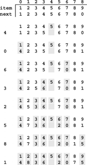

C++ Programming Robert Sedgewick - Princeton University Addison Wesley Professional Algorithms in C++, Parts 1–4: Fundamentals, Data Structure, Sorting, Searching, Third Edition C++ Programming Robert Sedgewick - Princeton University Addison Wesley Professional Algorithms in C++, Parts 1–4: Fundamentals, Data Structure, Sorting, Searching, Third Edition
3.5. Memory Allocation for Lists
An advantage of linked lists over arrays is that linked lists gracefully grow and shrink during their lifetime. In particular, their maximum size does not need to be known in advance. One important practical ramification of this observation is that we can have several data structures share the same space, without paying particular attention to their relative size at any time.
The crux of the matter is to consider how the operator new might be implemented. For example, when we remove a node from a list, it is one thing for us to rearrange the links so that the node is no longer hooked into the list, but what does the system do with the space that the node occupied? And how does the system recycle space such that it can always find space for a node when new is invoked and more space is needed? The mechanisms behind these questions provide another example of the utility of elementary list processing.
Operator delete is the counterpart to new. When we are done using a chunk of allocated memory, we invoke delete to inform the system that the chunk is available for later use. Dynamic memory allocation is the process of managing memory and responding to invocations of new and delete from client programs.
When we are invoking new directly in applications such as Program 3.9 or Program 3.11, all the calls request memory blocks of the same size. This case is typical, and an alternate method of keeping track of memory available for allocation immediately suggests itself: Simply use a linked list! All nodes that are not on any list that is in use can be kept together on a single linked list. We refer to this list as the free list. When we need to allocate space for a node, we get it by removing it from the free list; when we remove a node from any of our lists, we dispose of it by inserting it onto the free list.
Program 3.14 is an implementation of the interface defined in Program 3.12, including the memory-allocation functions. When compiled with Program 3.13, it produces the same result as the direct implementation with which we began in Program 3.9. Maintaining the free list for fixed-size nodes is a trivial task, given the basic operations for inserting nodes onto and deleting nodes from a list.
Figure 3.11 illustrates how the free list grows as nodes are freed, for Program 3.13. For simplicity, the figure assumes a linked-list implementation (no head node) based on array indices.
This version of Figure 3.6 shows the result of maintaining a free list with the nodes deleted from the circular list, with the index of first node on the free list given at the left. At the end of the process, the free list is a linked list containing all the items that were deleted. Following the links, starting at 1, we see the items in the order 2 9 6 3 4 7 1 5, which is the reverse of the order in which they were deleted.

Implementing a general-purpose memory allocator in a C++ environment is much more complex than is suggested by our simple examples, and the implementation of new in the standard library is certainly not as simple as is indicated by Program 3.14. One primary difference between the two is that new has to handle storage-allocation requests for nodes of varying sizes, ranging from tiny to huge. Several clever algorithms have been developed for this purpose. Another approach that is used by some modern systems is to relieve the user of the need to delete nodes explicitly by using garbage-collection algorithms to remove automatically any nodes not referenced by any link. Several clever storage management algorithms have also been developed along these lines. We will not consider them in further detail because their performance characteristics are dependent on properties of specific systems and machines.
Program 3.14. Implementation of list-processing interface|
This program gives implementations of the functions declared in Program 3.12, and illustrates a standard approach to allocating memory for fixed-size nodes. We build a free list that is initialized to the maximum number of nodes that our program will use, all linked together. Then, when a client program allocates a node, we remove that node from the free list; when a client program frees a node, we link that node in to the free list.
By convention, client programs do not refer to list nodes except by declaring variables of type Node and using them as arguments to functions defined in the interface, and nodes returned to client programs have self-links. These conventions provide a measure of protection against referencing undefined pointers and provide some assurance that the client is using the interface as intended. In C++, we enforce such conventions by using classes with constructors (see Chapter 4).
#include <stdlib.h>
#include "list.h"
link freelist;
void construct(int N)
{
freelist = new node[N+1];
for (int i = 0; i < N; i++)
freelist[i].next = &freelist[i+1];
freelist[N].next = 0;
}
link newNode(int i)
{ link x = remove(freelist);
x->item = i; x->next = x;
return x;
}
void deleteNode(link x)
{ insert(freelist, x); }
void insert(link x, link t)
{ t->next = x->next; x->next = t; }
link remove(link x)
{ link t = x->next; x->next = t->next; return t; }
link next(link x)
{ return x->next; }
Item item(link x)
{ return x->item; }
|
Programs that can take advantage of specialized knowledge about an application often are more efficient than general-purpose programs for the same task. Memory allocation is no exception to this maxim. An algorithm that has to handle storage requests of varying sizes cannot know that we are always going to be making requests for blocks of one fixed size, and therefore cannot take advantage of that fact. Paradoxically, another reason to avoid general-purpose library functions is that doing so makes programs more portable—we can protect ourselves against unexpected performance changes when the library changes or when we move to a different system. Many programmers have found that using a simple memory allocator like the one illustrated in Program 3.14 is an effective way to develop efficient and portable programs that use linked lists. This approach applies to a number of the algorithms that we will consider throughout this book, which make similar kinds of demands on the memory-management system. That said, we shall use the standard C++ facilities new and delete for memory allocation throughout the rest of the book.
Exercises |  3.46 Write a program that frees (invokes delete with a pointer to) all the nodes on a given linked list. 3.46 Write a program that frees (invokes delete with a pointer to) all the nodes on a given linked list.
| | 3.47 Write a program that frees the nodes in positions that are divisible by 5 in a linked list (the fifth, tenth, fifteenth, and so forth). | | 3.48 Write a program that frees the nodes in even positions in a linked list (the second, fourth, sixth, and so forth). | | 3.49 Implement the interface in Program 3.12 using new and delete directly in newNode and deleteNode, respectively. | | | | 3.50 Run empirical studies comparing the running times of the memory-allocation functions in Program 3.14 with new and delete (see Exercise 3.49) for Program 3.13 with M = 2 and N = 103, 104, 105, and 106. | | 3.51 Implement the interface in Program 3.12 using array indices (and no head node) rather than pointers, in such a way that Figure 3.11 is a trace of the operation of your program. | | 3.52 Suppose that you have a set of nodes with no null pointers (each node points to itself or to some other node in the set). Prove that you ultimately get into a cycle if you start at any given node and follow links. | |  3.53 Under the conditions of Exercise 3.52, write a code fragment that, given a pointer to a node, finds the number of different nodes that it ultimately reaches by following links from that node, without modifying any nodes. Do not use more than a constant amount of extra memory space. 3.53 Under the conditions of Exercise 3.52, write a code fragment that, given a pointer to a node, finds the number of different nodes that it ultimately reaches by following links from that node, without modifying any nodes. Do not use more than a constant amount of extra memory space.
| |  3.54 Under the conditions of Exercise 3.53, write a function that determines whether or not two given links, if followed, eventually end up on the same cycle. 3.54 Under the conditions of Exercise 3.53, write a function that determines whether or not two given links, if followed, eventually end up on the same cycle.
|
|